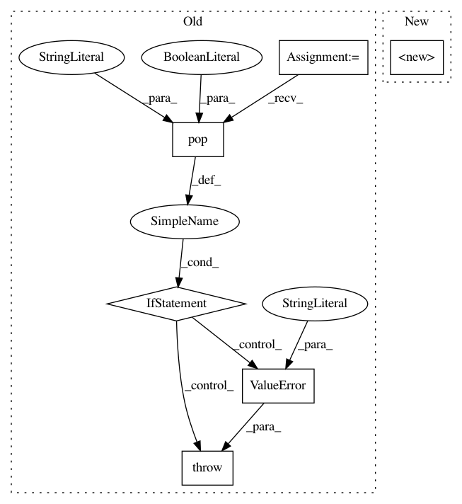

530ae51767d22383191574862c1e31dd6d070344,unbalanced_dataset/over_sampling/over_sampler.py,OverSampler,__init__,#OverSampler#,33
Before Change
verbose=verbose)
// Do not expect any support regarding the selection with this method
if (kwargs.pop("indices_support", False)):
raise ValueError("No indices support with this method.")
self.method = method
if (self.method == "gaussian-perturbation"):
self.mean_gaussian = kwargs.pop("mean_gaussian", 0.0)
self.std_gaussian = kwargs.pop("std_gaussian", 1.0)
After Change
super(OverSampler, self).__init__(ratio=ratio,
random_state=random_state,
verbose=verbose)
@abstractmethod
def fit(self, X, y):
Find the classes statistics before to perform sampling.
In pattern: SUPERPATTERN
Frequency: 3
Non-data size: 6
Instances
Project Name: scikit-learn-contrib/imbalanced-learn
Commit Name: 530ae51767d22383191574862c1e31dd6d070344
Time: 2016-05-18
Author: glemaitre@visor.udg.edu
File Name: unbalanced_dataset/over_sampling/over_sampler.py
Class Name: OverSampler
Method Name: __init__
Project Name: scikit-learn-contrib/imbalanced-learn
Commit Name: 6f1fe34c3522de1223aa0c4f7342e8d22c781f63
Time: 2016-05-20
Author: glemaitre@visor.udg.edu
File Name: unbalanced_dataset/combine/smote_tomek.py
Class Name: SMOTETomek
Method Name: __init__
Project Name: scikit-learn-contrib/imbalanced-learn
Commit Name: b20ddcf861a570da75cfb0a49edf638b2b8b2767
Time: 2016-05-20
Author: glemaitre@visor.udg.edu
File Name: unbalanced_dataset/ensemble/balance_cascade.py
Class Name: BalanceCascade
Method Name: __init__